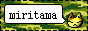
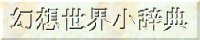

リンク
トッチE/u>
�E�リンク
Panpease Records
2003年7朁E3日に発売されたコーネリアスのアルバム『PM』（コーネリアスの楽曲「Point」を様、E��アーチE��ストがリミックスしたも�E�E�に、E 我らがPanpease Recordsの運営老E��シュウロことPanpeaseこと駁E��な僕�EトラチE��が収録されてぁE��す。曲頁E�E7曲目、アーチE��スト名はなんとPanpease Records�E�Ebr> 長らく死んでぁE��と思ったら、�EてなのほぁE��移転したそうで、E/font>
Cornelius
OOPS!
ばぁE�EらWeb
曲が�Eけます落とせます、�EぁE�Eら�E式Webサイト、E/font>
muzie:Panpease Records

冁E��雁E��郎氏私設ファンサイト みりたチE/a>
冁E��氏�E認！ ぁE��だファンによる、うちだファンのための…以下略。（相互リンク許可をいただきました。本当にありがとぁE��ざいます！E��E/font>
ねら�Eず�Eねりすとろじー
2ちめE��ねるまとめサイト、E/font>
ケータイゲーム会社�E�アルチE��公式�Eームペ�Eジ
PSP『ワールド�Eネバーランド～ククリア王国物語～』UMDパッケージ版発売のお知らせが掲載されてます、E/font>
Warp
エレクトロニック・ミュージチE��の老�EWARP RECORDSのサイト、E/font>
Seefeel - Facebook Page
どぁE��らPolyfusiarecordsは再開しなぁE��ぁE��ので、復活したSeefeelのFacebookペ�Eジにリンク変更、E/font>
WIRE13�E�ワイアーサーチE��ーン�E�ａE013.09.14(SAT) YOKOHAMA ARENA
リンク更新忘れてた……今年は9月か、E/font>
斁E��ジャンキー・パラダイス
圧巻の一言。ジョジョ立ちコーナ�Eは忁E��！E/font>

幻想世界小辞�E-世界の神話のチE�Eタベ�Eス
あめのちひかり
あらら、リンク死んでます�E……
午後十一時劇場
こちらもリンク死んでます……
空手チョチE�EをもぁE��度。TOPへ
はてなブックマ�Eクの惁E��を読み込んでぁE��す、E/div>
 PSP『ワールド�Eネバーランド～ククリア王国物語～』UMDパッケージ版発売のお知らせが掲載されてます、E/font>
PSP『ワールド�Eネバーランド～ククリア王国物語～』UMDパッケージ版発売のお知らせが掲載されてます、E/font>